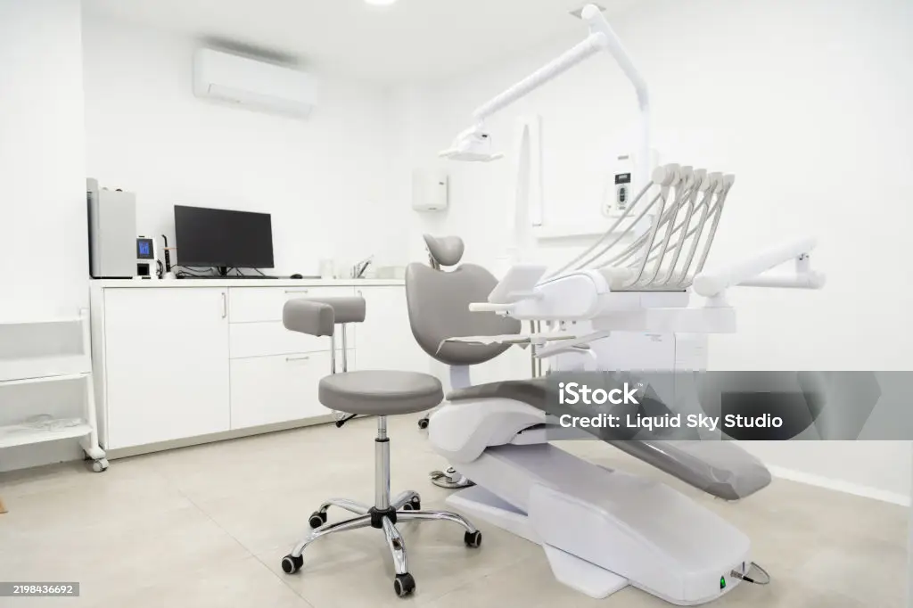
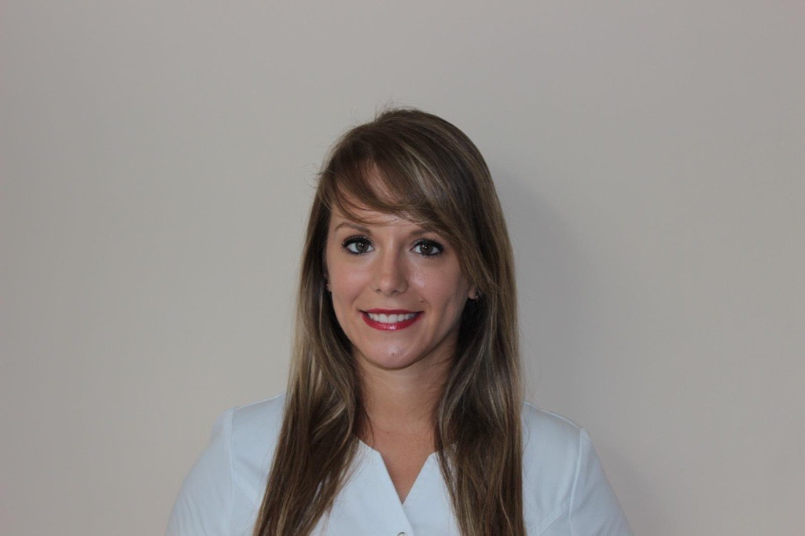
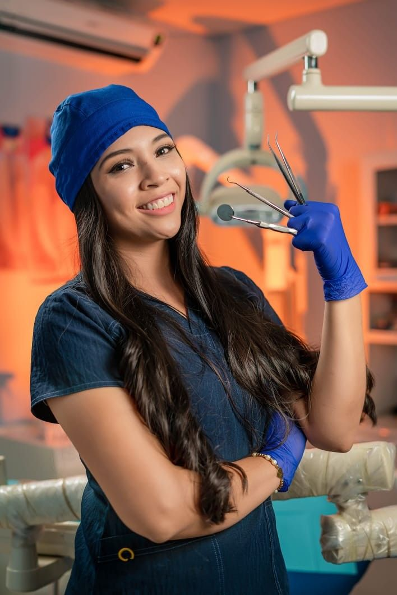
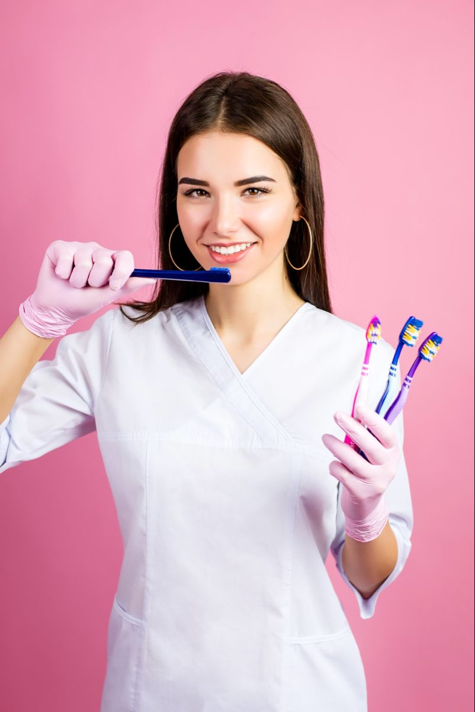
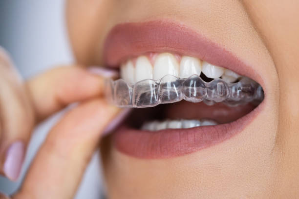

"Una sonrisa puede durar un segundo, pero su recuerdo puede durar toda la vida."
Anónimo
La clínica dental Laura Muñoz nace con la ilusión de devolver la sonrisa a quienes lo necesiten, ofreciendo siempre un trato cercano y personalizado.
¿QUIÉNES SOMOS?
La Clínica Laura Muñoz nace con el objetivo de convertirse en una Clínica de especialidades
dentales
de
calidad y en continuo desarrollo para poder ofrecer las mejores y más actualizadas técnicas en
odontología.
Fundada en 2026 por la Higienista Laura Muñoz Pérez actualmente cuenta con un equipo multidisciplinar de especialistas formados en la Universidad de Valencia que abarca los campos de la Endodoncia, Periodoncia, Estética y Prótesis dental, Ortodoncia, Odontopediatría y Cirugía Oral.
Porque sabemos que tal grado de PROFESIONALIDAD no tendría sentido sin un trato AGRADABLE Y CERCANO, ponemos todo nuestro empeño en que el paciente se sienta cómodo y en un ambiente familiar. FILOSOFÍA


Nuestros valores:
- La Salud Oral y su Prevención.
- La Honestidad.
- La Comprensión, recordando siempre nuestro compromiso de ayudar a otras personas.
- La Voluntad de Crecer.
- El Agradecimiento, hacia aquellas personas que confían en nosotros y nos lo hacen saber.
Equipo

Laura Muñoz Pérez
Higienista Dental

Yolanda Muñoz Pérez
Higienista Dental

Paula Morilla
Odontologa
Tratamientos

Endodoncia
La endodoncia es un tratamiento dental que consiste en eliminar el tejido pulpar enfermo o necrótico (nervio y vasos sanguíneos situados en el interior del diente), con el objetivo de conservar la pieza dental.
Se trata de un procedimiento minucioso y delicado, por lo que es recomendable que sea realizado por un especialista en endodoncia, garantizando así un resultado óptimo.
Los dientes, especialmente las muelas, presentan conductos muy estrechos y curvados, lo que hace que la experiencia y precisión del profesional sean factores clave para el éxito del tratamiento.

Estética Dental
La Estética dental es uno de los sectores más demandados en el campo de la odontología.
Los materiales estéticos de última generación (porcelanas y composites estéticos) así como la mejora en las técnicas de adhesión han permitido grandes avances en este campo.
Actualmente contamos con muchas herramientas que facilitan la predictibiladad de nuestros tratamientos estéticos: la fotografía digital, programas para el diseño de la sonrisa como el Digital Smile Design, realización de Mock-ups (maquetas que se colocan sobre los dientes para comprobar el resultado) y que permiten al paciente participar en el diseño de su nueva sonrisa. En nuestra clínica apostamos por una estética conservadora.
En nuestra clínica apostamos por una estética conservadora. Esto significa que siempre que se pueda realizaremos cambios estéticos con la menor perdida de tejido dentario posible. Los tratamientos estéticos clásicos con coronas de porcelana implican el tallado de los dientes, esto es limar la capa de esmalte que cubre los dientes.

Implantes
El Implante dental es un tornillo de titanio que sustituye la raíz de una o varias piezas dentales perdidas, evitando así la perdida ósea y recuperando la función masticatoria.
Antes de comenzar un tratamiento de implantes debe realizarse un estudio basado en la exploración del paciente, su historia médica y un estudio de radiodiagnóstico para una correcta planificación del caso.
Una vez colocado el/los implantes se completa el tratamiento con la parte protésica, que consiste en la colocación de una corona cubierta de porcelana para casos de reposición de un solo diente, puentes cubiertos de porcelana para reponer varios dientes o incluso la colocación de prótesis para arcadas completas, recuperando de ese modo la estética y la función.

Ortodoncia
La Ortodoncia es la especialidad que corrige las alteraciones en la posición de los dientes y de las arcadas dentarias. Es un tratamiento que se puede realizar a cualquier edad.
En nuestra clínica ofrecemos una primera consulta sin compromiso con el Ortodoncista, para que puedas recibir información y asesoramiento de los distintos tratamientos que existen y recomendaciones para tu caso en particular.
Las últimas tendencias de ortodoncia invisible hacen del tratamiento InsisalignR una de las opciones más demandadas, pero también seguimos utilizando las técnicas convencionales con brackets metálicos o estéticos así como la ortodoncia interceptiva a edades tempranas, que nos permite solucionar problemas de morfología de los maxilares que a partir de cierta edad no se pueden corregir sin cirugía.
 Facebook
Facebook Instagram
Instagram